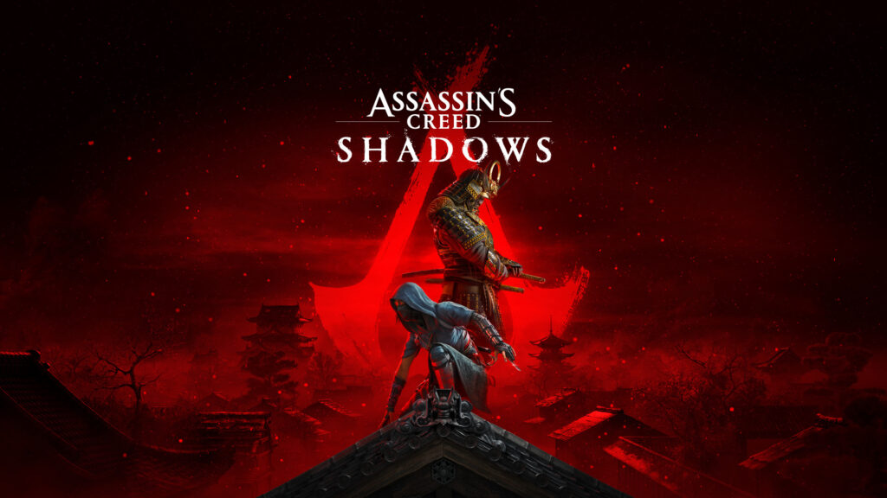
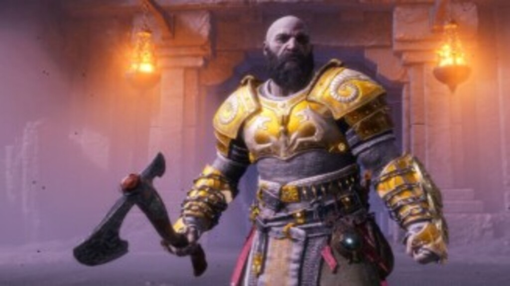

Bethesda afirma que Fallout 5 vai demorar para ser produzidoby Adrenaline
O desenvolvimento de Fallout 5 ainda vai demorar bastante, já que a Bethesda não pulará etapas para aproveitar o
sucesso da franquia.
Ou seja, mesmo com a Prime Video curtindo os holofotes e jogos como Fallout 3, Fallout 4 e Fallout 76 registrando
novos picos no Steam – que chegam a 150% de crescimento – não significa que a produtora pulará etapas e trará algo
como Fallout 5 ao público tão cedo.
No Twitter/X, o desenvolvedor da Bethesda Emil Pagliarulo foi questionado se vai demorar muito para vermos algo
relacionado ao game. Com The Elder Scrolls 6 chegando em 2026 – em expectativas otimistas – e parte da equipe
ainda focada em Starfield, é possível que um novo jogo baseado na franquia não apareça até 2030.

Pré-venda de Assassin's Creed Shadows já disponível nos consoles e PC custando até R$ 650by Adrenaline
Os interessados já podem comprar Assassin's Creed Shadows em pré-venda nas lojas digitais do PlayStation 5, Xbox
Series e PC
A pré-venda do jogo Assassin’s Creed Shadows para PlayStation 5, Xbox Series e PC acaba de ser liberada
oficialmente nas lojas digitais. Ele será lançado em 15 de novembro e chega custando R$ 349,99 em sua Edição
Padrão, R$ 549,99 na Edição Gold e R$ 649,99 na Edição Ultimate.

God of War Ragnarok de PC com desconto de 10% na pré-venda Nuuvemby IGN Brasil
A Nuuvem está oferecendo uma oferta de pré-venda para o jogo God of War Ragnarok em sua versão para PC. Ele é
desenvolvido pela Santa Monica com apoio da Jetpack Interactive para portar o jogo para o PC e será publicado pela
PlayStation Studios.
Jogos de PS4 e PS5 em oferta por menos de R$ 90 na Promoção Days of Playby Adrenaline
Red Dead Redemption 2, Hi-Fi Rush, Mafia: Trilogy e The Wonderful 101: Remastered são algumas das ofertas para
jogos de PS4 e PS5 na PS Store
A Sony disponibilizou novos jogos em sua Promoção Days of Play. São centenas de jogos e expansões para PlayStation
4 e PlayStation 5 disponíveis nas ofertas na PS Store e selecionamos jogos saindo por menos de R$ 90. Os games da
lista possuem descontos de até 80% e poderão ser adquiridos neste valor promocional.
Resident Evil Village vendeu 10 milhões de unidadesby IGN Brasil
Capcom atribuiu a presença do game no iPhone 15 Pro como fator diferencial que impulsionou vendas do game no
último ano
A Capcom celebrou a conquista de Resident Evil Village e destacou a presença do game em plataformas como iPads e
iPhones como fator responsável pelas vendas contínuas. Resident Evil Village estava com 9,8 milhões de unidades
até o início de abril de 2024.
Ou seja, game vendeu cerca de 200 mil cópias nos últimos meses. Lembrando que o Resident Evil com maior número de
vendas é o remake de Resident Evil 2 com 13,9 milhões de unidades vendidas.
62,2% dos jogadores de Elden Ring não estão prontos para DLC no Steamby TechTudo
A Bandai Namco alerta que mais de 62% dos jogadores de Elden Ring no Steam ainda não cumpriram as exigências para
jogar o DLC
O DLC “Shadow of the Erdtree” está chegando a Elden Ring e, ao menos no Steam, nem metade dos jogadores cumpriram
todos os requisitos para desbloquear o conteúdo no seu lançamento em 21 de junho de 2024.
A Bandai Namco, em uma repostagem no X, aponta que apenas 37,8% dos jogadores derrotaram Mogh, Lorde do Sangue nos
PCs – de acordo com a própria plataforma. Ou seja, temos 62,2% do público que pode comprar o conteúdo, mas que não
poderá jogá-lo até completar esta tarefa.